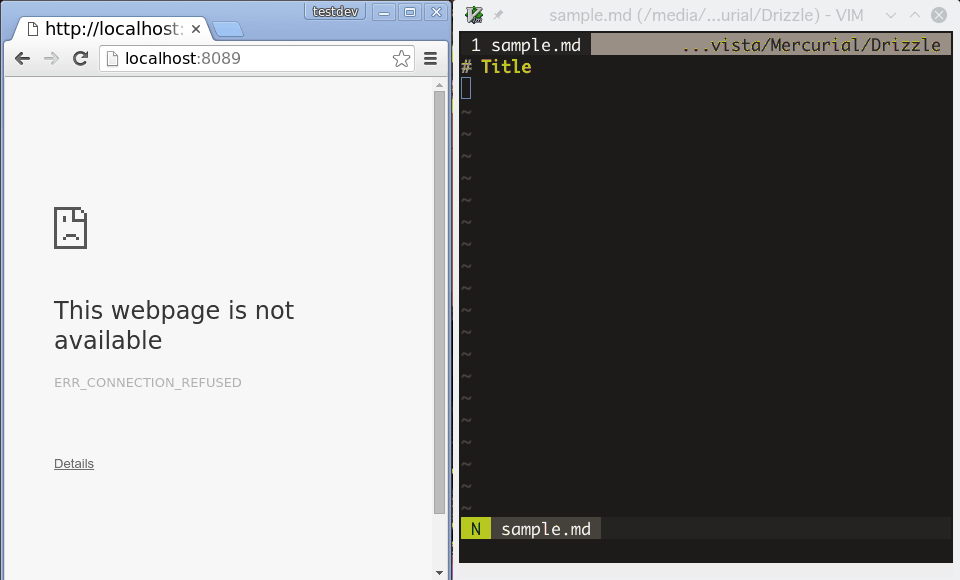

Vim に channel が実装されたので Markdown をプレビューするプラグインを作りました
Vimにchannel機能が実装されました。
Big Sky :: Vim にchannel(ソケット通信機能)が付いた。
昨日から株価・為替は乱高下し、大臣の辞任、日銀のマイナス金利導入決定など国内では大きなニュースが続いていますが、Vimmerにとってはこのパッチが最も影響があったのではないでしょうか。
というわけで、せっかくなのでchannel機能を使ってプラグインを書いてみました。 みんな大好きMarkdownのリアルタイムプレビューです。
channelを使ってみたかっただけなので、今のところデバッグ・エラー処理・設定などはやっつけです。 お遊び以外では使わないでください。
インストール
インストール方法は普通のvimプラグインと同じです。コピーするなりプラグインマネージャを使うなり、お好みの方法でインストールしてください。
NeoBundleをお使いの場合は NeoBundle 'miyakogi/livemark.vim' です。
残念ながらVimはまだmarkdownの変換やwebサーバーなどの機能はないので、その辺りはPythonで処理しています。 以下のようにpythonのライブラリを別途インストールして下さい。
pip3 install misaka pygments tornado
def a(): print('Hello!')
pygments はコードのシンタックスハイライトに使っています。
Vimのpythonではなく外部プロセスでpythonを起動しているので、vimは+python3でなくても動きます。vimprocもなくて大丈夫です。
Pythonのバージョンは3.5で確認していますが、たぶん3.4でも動くと思います。
使い方
Vimで適当なmarkdownファイルを開き、:LiveMarkを実行してください。するとchromeが起動しますので、vimでファイルを編集したりカーソルを動かしたりしてみてください。リアルタイムで変更がブラウザ上に反映されるはずです。
また、Vim上のカーソル位置も取得していますので、長い文章でブラウザの画面に収まらない場合、カーソル位置が画面に収まるようにいい感じ（自称）にスクロールします。
スタイルが何もないと寂しいので、Honoka という日本語向けの Bootstrap テーマを同梱させていただきました1。日本語でもきれいに表示されると思います。
終了する時は:LiveMarkDisableです。何もしなくてもVimが終了した時にサーバープロセスは止まります。
手抜き感の漂うスクリーンキャスト・・・

諸注意
エラーなどでPythonのプロセスが残ってしまう場合があります。その時はプロセスを殺してください。
-
HonokaのCDNがわからなかったのでコードを含めています。 ライセンスはMITとのことなので大丈夫だとは思いますが、もし不都合ありましたらご一報ください。 ↩